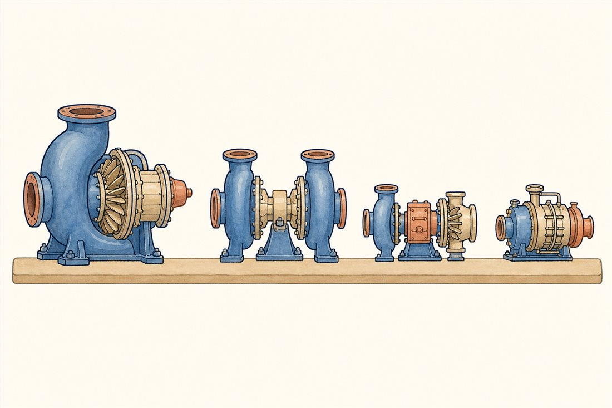

じっさいのポンプで、答え合わせ
卒業試験です。8話ぶんの言葉——NPSH、比速度、部分流入、移着膜、ホワール、チルダウン——を道具に、歴史に残る4つの心臓を読み解きます。同じ物理に、4つのチームが出した4つの答え。第1巻・第2巻の卒業試験と同じ構図が、機械のいちばん深いところでも繰り返されます。

| SSME HPFTP | Merlin 1D | RL10 | LE-9 FTP/OTP | |
|---|---|---|---|---|
| 思想 | 極限の性能 | 単純と量産 | 歯車の知恵 | 安全と単純 |
| 回転数 | 約37,000rpm | 約36,000rpm | 2軸(歯車比) | 41,600/17,000 |
| 動力 | 約7.7万hp(FPL) | 約1万hp | 数千hp級 | — |
| ひとこと | V8の重さで310倍 | 1軸で2液 | 燃料側が歯車で酸素側を回す | 短軸でダンパ不要 |
そして総復習。章番号をタップすると、その章の言葉でこの4つを読み解きます。
よりみち歯車で回す、という古典の知恵
1960年代生まれのRL10は、いまも現役の長寿エンジンです。その心臓の特徴は歯車箱——タービンと液体水素ポンプが載る軸から、歯車列を介して液体酸素ポンプを減速駆動します。軽い水素は速く回したい、重い酸素はゆっくりでいい——第2巻04話のGTFとまったく同じ「回転数のジレンマ」への、60年前の答えです。水素環境で歯車の歯が溶着するトラブルには、浸炭鋼と二硫化モリブデンで応じた記録も残っています。機械要素の教科書とロケットが、こんなところで握手しています。
よりみち1本の軸で、2つの液を送る
SpaceXのMerlinは対照的に、1本の軸の両側にRP-1（ケロシン）ポンプと液体酸素ポンプを背中合わせに載せ、1つのタービンでまとめて回す単軸構成です。回転数の最適はそれぞれ妥協になりますが、部品は減り、作るのも整備も速い——毎週のように打ち上げる商売には、その単純さこそが性能です。約36,000rpm・約1万馬力（メーカー公称）。「最適」ではなく「十分」を選ぶ勇気の見本で、LE-9の「安全なエンジン」思想と、違う言葉で同じ谷を渡っています。
 流体屋のためのノート — 第3巻の地図、そして現場へ
流体屋のためのノート — 第3巻の地図、そして現場へ
この巻を1枚に畳みます。高パワー密度という一点から、すべての難しさが放射していました——吸い込みの泡（02）、1段の大仕事（03）、小さな翼車の数万馬力（04）、油のない国境（05）、細い軸の自励振動（06）、地図の外の数秒（07）。そして答えは1つではない——SSMEは性能へ、Merlinは単純へ、RL10は歯車へ、LE-9は安全へ。設計思想とは、同じ物理のどの怖さを最も恐れるかの表明です。この3巻ぶんの言葉が、あなたの現場の議論のどこかで、小さな共通言語として働きますように。角田の水槽で、いつか本物の泡を見てきてください。
.jpg){kind=link}
第3巻 ターボポンプ編 ── かんけつ
うちゅうと、そらと、心臓。
3冊の図鑑は、ここでひと区切り。
つづきは、あなたの手で回してください 🫀
・SSME HPFTP: NTRS 19900003334・NASA Shuttle Propulsion Trivia／LE-9: IHI技報 Vol.58 No.2
・RL10歯車駆動: NASA TM-107318／Merlin単軸・約36,000rpm・約1万hp: Wikipedia "SpaceX Merlin"（メーカー公称）
・G. P. Sutton, 9th ed., ch.10／NASA SP-8107